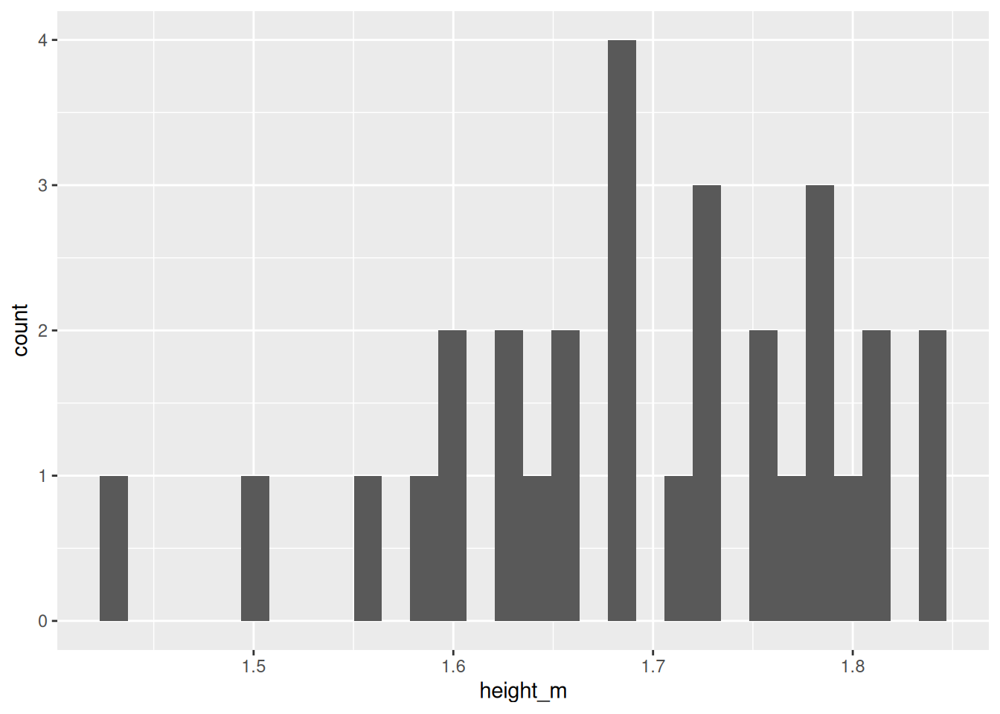

The tidyverse is an R package that makes working with data easier than in ‘base R’, especially for life scientists:
Import your lab or field data quickly (e.g. read_csv() brings in spreadsheets).
Clean and organise data with simple commands so your tables look exactly how you need them.
Summarise measurements by groups (e.g. calculate mean height per treatment).
Reshape data between “wide” and “long” formats for different analyses. (More on this later…)
Plot effectively with ggplot2 for dissertation or publication-ready figures.
Introducing the tidyverse
The tidyverse is a collection of R packages designed to work together. Examples include:
dplyr for data manipulation (filter(), mutate(), summarise()).
readr for reading files.
tidyr for reshaping data.
ggplot2 for plotting.
You can install and load tidyverse with these functions.
install.packages("tidyverse") # Install first-time onlylibrary(tidyverse) # Load after installing
Throughout this course, you will start every script that you make by loading tidyverse with library(tidyverse).
Common tidyverse functions
Let’s look at some of the common functions in tidyverse
tibble(): creates a ‘data frame’, an object with columns and rows, similar to an Excel file
filter(): keeps rows matching certain conditions
select(): chooses specific columns from a dataset
mutate(): creates or transforms columns
group_by(): defines groups of rows to apply operations within each group
summarise(): collapses values into summary statistics (often used with group_by)
arrange(): sorts rows in ascending or descending order
install.packages("tidyverse") # Install first-time onlylibrary(tidyverse) # Load after installing
What is a tibble?
A tibble object is a type of data frame
It stores data in rows and columns, like a spreadsheet
Each column has a “type”, e.g.
text <chr>, numbers <dbl>, logical (TRUE/FALSE) <lgl>—more on types later!
# Example of a tibble containing names, heights, and registration status of studentsstudents_tbl <-tibble(name =c("Rosie", "Ben", "Chloe", "Dinesh", "Sara", "Zahraa", "Rana", "Alejandro"),height_m =c(1.65, 1.80, 1.72, 1.59, 1.54, 1.70, 1.51, 1.67),registered =c(TRUE, FALSE, FALSE, FALSE, FALSE, TRUE, TRUE, TRUE))# Print students_tbl to the screenstudents_tbl
Note by default, only the first 10 rows are printed to the screen as a preview.
Revisiting the pipe: %>% or |>
Recall that:
The pipe %>% or |> lets you chain operations in a left-to-right flow.
The pipe ‘sends’ objects or function outputs to other functions.
%>% used to be available only through one of the packages of the tidyverse (dplyr), but recently base R has added |>. These are (currently) interchangable.
The pipe is especially useful in tidyverse workflows.
# Without pipe; confusing and hard to read.result <-summarise(group_by(data, group), mean_height =mean(height))# With pipe: read each function line-by-line, much clearer to readresult <- data %>%group_by(group) %>%summarise(mean_height =mean(height))# Equivalently with the native pipe in R 4.1+result <- data |>group_by(group) |>summarise(mean_height =mean(height))
Using the pipe is the tidy way
Let’s revisit our heights example from the last section to see how the pipe is used in a tidyverse workflow.
# Load the tidyverse packagelibrary(tidyverse)# Sample heights of students in meters (m)height_m <-c(1.56, 1.63, 1.81, 1.69, 1.77,1.73, 1.59, 1.73, 1.65, 1.63,1.68, 1.50, 1.80, 1.60, 1.78,1.68, 1.84, 1.60, 1.64, 1.71,1.43, 1.76, 1.84, 1.79, 1.75,1.65, 1.81, 1.78, 1.72, 1.68)# Now create a tibble with heights as a columnheights <-tibble(height_m)# Compute mean and standard deviation of heightheights_summary <- heights |>summarise(mean_height =mean(height_m),sd_height =sd(height_m) )
The pipe helps with reading code because each line does one function.
Here is how you would create a plot using ggplot2 from tidyverse. This will look a bit complicated for now, but we’ll come back to plotting in a later session.
# Plot distribution using tidyverse# 'Send' the heights tibble to ggplot()histogram_fancy <- heights |>ggplot(aes(x = height_m)) +geom_histogram()# Show the histogram on the screenhistogram_fancy # or print(histogram_fancy)
`stat_bin()` using `bins = 30`. Pick better value `binwidth`.

Getting help
As before, Google and ChatGPT are good for working out error messages and other problems.
You’ve now set up R, learned the basic grammar of objects and functions, and run your first tidyverse commands. Make sure you complete the “Check your understanding” quiz at the end of the notes page.
In the next session, we’ll look at how to import and ‘wrangle’ data, explore summary statistics of data further, data visualisation and transformation.
You are now ready to attend the first hands-on practical.